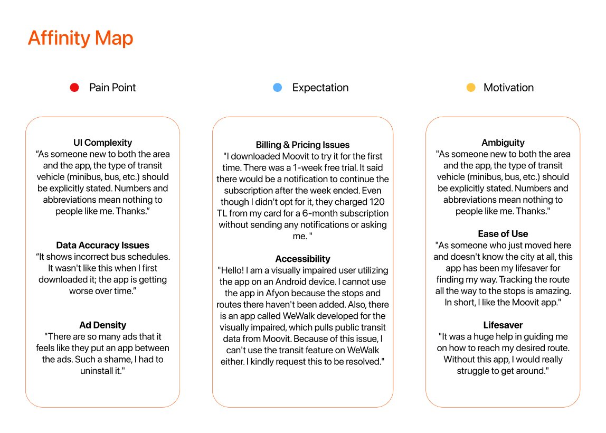
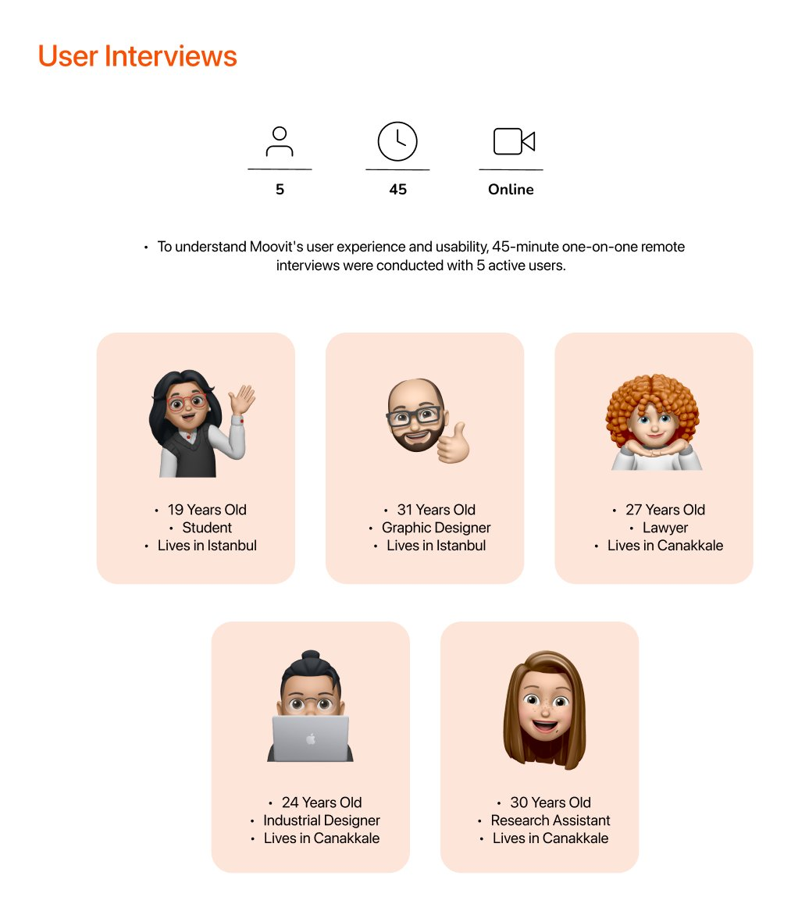
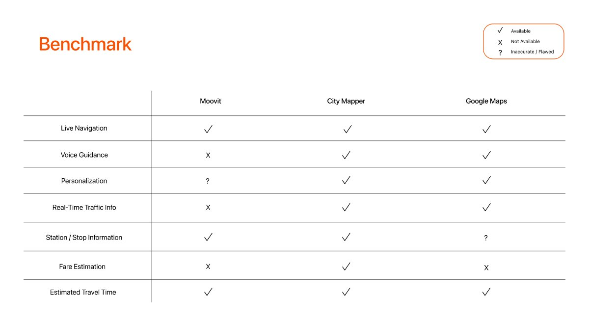
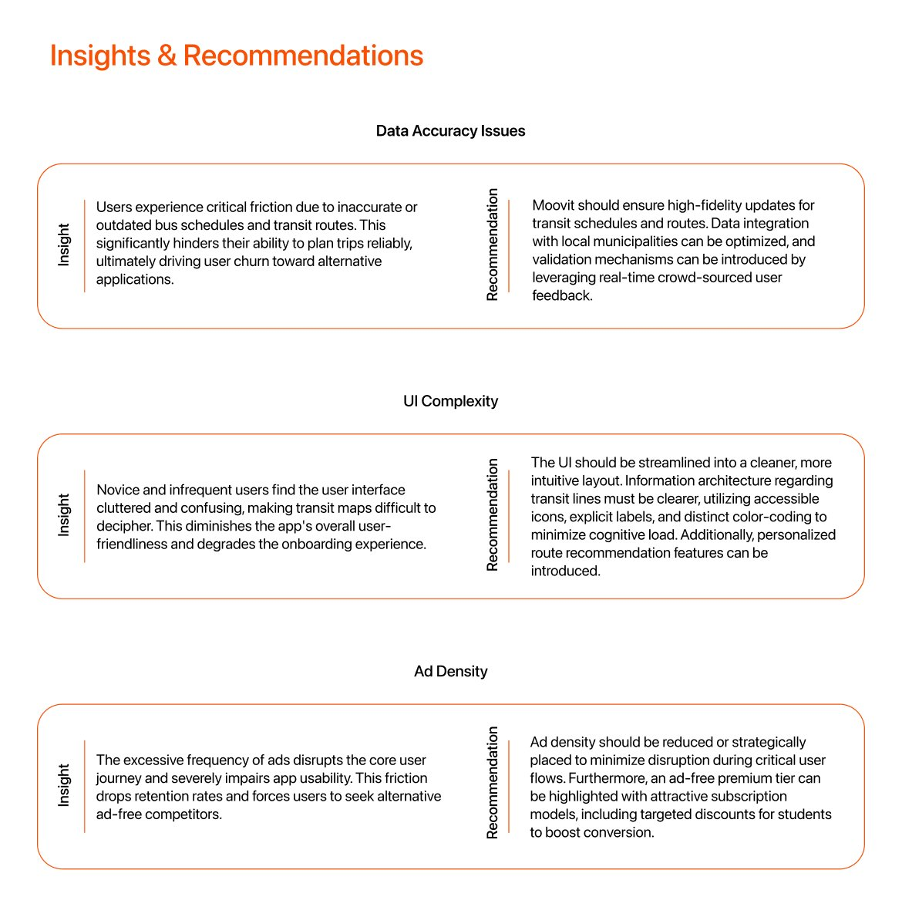

Riders get lost in the app, not the city.
Ambiguous transit labels, a convoluted flow and inaccurate schedules create a steep learning curve and erode trust.
Case study 03 · December 2024 · UX research
A UX research study on why public-transit riders lose trust in Moovit, and what would win them back.

Ambiguous transit labels, a convoluted flow and inaccurate schedules create a steep learning curve and erode trust.
New riders couldn’t tell a minibus from a bus. Clear labels and reliable data drive retention more than new features.
Validated schedule data, clearer IA with explicit labels, icons and colour, and less intrusive ads with a student premium tier.
Research question: what do Moovit users experience during their public-transit journeys, and how does it affect them?
I collected 37 positive, negative and neutral reviews from the App Store, Google Play, Ekşi Sözlük and Şikayetvar and synthesised them in Airtable. I then ran 45-minute remote one-to-one interviews with 5 active users, aged 19–31, in Istanbul and Çanakkale, and benchmarked Moovit against Google Maps and Citymapper.
Inaccurate schedules and outdated routes break trust in trip planning and push people to other apps.
Frequent pop-up ads disrupt core flows and lower retention.
A cluttered interface creates a steep learning curve, especially for new and occasional riders.
Some users report unexpected subscription charges and ask for more flexible monthly options.
People feel their reports go unanswered, so the app seems unresponsive to their needs.
Quotes from reviews and interviews, grouped into pain points, expectations and motivations.

From 37 reviews to 3 recommendations.

Outdated times drive churn. Validate data with municipalities and real-time rider feedback.

Explicit vehicle labels, icons and colour-coding lower the learning curve for new users.

Move ads away from navigation and offer an ad-free tier with student pricing.

45-minute remote sessions on travel habits, satisfaction, expectations, pain points and in-app ads.

In my comparison, the competitors offered voice guidance, real-time traffic and fare estimates that Moovit lacked, with less ad intrusion.

Data accuracy, UI complexity and ad density, each with a concrete recommendation.
Scroll inside the frame to read the full document.
Redesign transit labels with explicit vehicle names, icons and colour, then test them with new riders.
Compare ad positions outside navigation flows to see their effect on task completion.
Interview more occasional riders and users with accessibility needs, a group raised in the reviews.